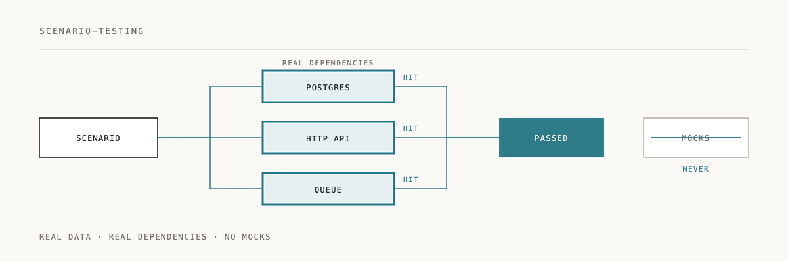

Scenario testing

End-to-end testing with real dependencies. No mocks allowed.
Installation
/plugin marketplace add 2389-research/claude-plugins
/plugin install scenario-testing@2389-research
What this plugin does
Enforces scenario-driven testing where features are validated against real systems with real dependencies. Mocks create false confidence. Only real scenarios prove code works.
Core principle
"NO FEATURE IS VALIDATED UNTIL A SCENARIO PASSES WITH REAL DEPENDENCIES"
When to use
- Writing tests for new features
- Validating that code actually works
- When tempted to use mocks
- Before declaring work complete
- After fixing bugs
The truth hierarchy
- Scenario tests (real system, real data) = truth
- Unit tests (isolated) = human comfort only
- Mocks = lies hiding bugs
A test that uses mocks is not testing your system. It's testing your assumptions about how dependencies behave.
Quick example
# .scratch/test-user-registration.py - NOT COMMITTED, gitignored
# Uses real database, real auth service (test mode)
def test_user_registration_scenario():
# No mocks - hit real services
user = register_user(
email="test@example.com",
password="secure123"
)
# Verify against real database
assert user.id is not None
assert user.email == "test@example.com"
assert user.email_verified is False
# Verify can authenticate with real auth service
token = login(email="test@example.com", password="secure123")
assert token is not None
# Cleanup real data
delete_user(user.id)
# After scenario passes, extract pattern to scenarios.jsonl (IS COMMITTED)
Required practices
1. Write scenarios in .scratch/
- Use any language appropriate to the task
- Exercise the real system end-to-end
- Zero mocks allowed
- Must be in
.gitignore(never commit)
2. Promote patterns to scenarios.jsonl
- Extract recurring scenarios as documented specifications
- One JSON line per scenario
- Include: name, description, given/when/then, validates
- This file IS committed
3. Use real dependencies
External APIs must hit actual services (sandbox/test mode acceptable). Mocking any dependency invalidates the scenario.
4. Independence requirement
Each scenario must run standalone without depending on prior executions. This means you get parallel execution, no hidden ordering dependencies, and reliable CI/CD integration.
What makes a scenario invalid
A scenario is invalid if it:
- Contains any mocks whatsoever
- Uses fake data instead of real storage
- Depends on another scenario running first
- Was never actually executed to verify it passes
Common violations to avoid
Reject these rationalizations:
- "Just a quick unit test..." -- unit tests don't validate features
- "Too simple for end-to-end..." -- integration breaks simple things
- "I'll mock for speed..." -- speed doesn't matter if tests lie
- "I don't have API credentials..." -- ask your human partner for real ones
Definition of done
A feature is complete only when:
- A scenario in
.scratch/passes with zero mocks - Real dependencies are exercised
.scratch/remains in.gitignore- Patterns extracted to
scenarios.jsonl
Example workflow
- Write scenario -- create
.scratch/test-user-registration.py - Use real dependencies -- hit real database, real auth service (test mode)
- Run and verify -- execute scenario, confirm it passes
- Extract pattern -- document in
scenarios.jsonl - Keep .scratch ignored -- never commit scratch scenarios
Why bother
Unit tests verify isolated logic. Integration tests verify components work together. Scenario tests verify the system actually works. Only scenarios prove your feature delivers value to users.
Documentation
See skills/SKILL.md for the complete scenario testing protocol.
Philosophy
Real validation over false confidence. Mocks test assumptions, not reality.
---
If real-dependency testing saved you from a mock-induced false positive, a ⭐ helps us know it's landing.
Built by 2389 · Part of the Claude Code plugin marketplace